Ship Decks
The length of Titanic was 269.06 m, maximum breadth of 28.19m. The length from the base of the keel to the top of the bridge was measured to be 32m. Titanic total weight was 52,310 tons ( 46,328 gross register tons and with a draught of 10.54m).
The deck plans of the ship were only handed out to the 324 first class passengers when they arrived on the ship in Southampton on April 10, 1912. RMS Titanic ship and her two sisters had ten decks. For passenger use were eight. The decks were named from top to bottom.
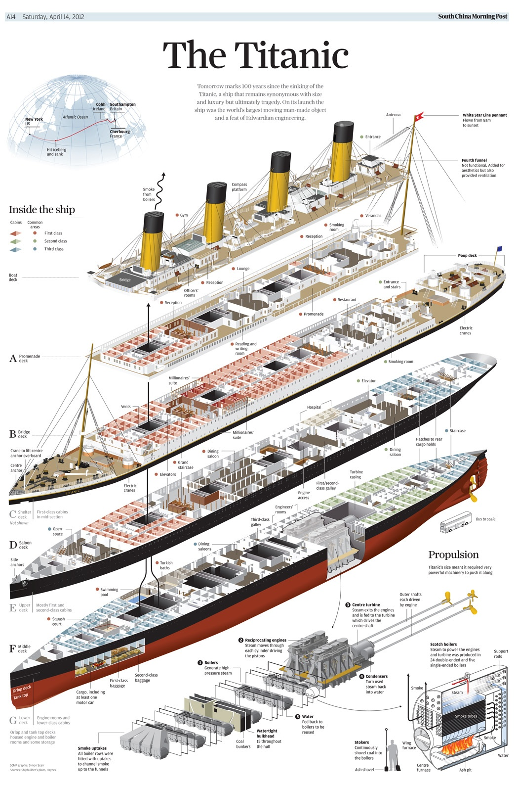
Boat Deck on RMS Titanic Ship - The lifeboats were positioned on the Boat Deck, the uppermost deck of the ship. Main part of it was for passengers’ promenading and leisure, especially for the First Class. Second Class had a smaller area. Everything was sheathed in yellow pine.
On the front deck end were located the Officers’ Quarters, the Marconi rooms, six First Class staterooms, the First Class Gymnasium, the forward First Class Entrance, also housed the Chart Room and other related spaces. Also, in other deck houses, there were the forward Second Class Entrance, engineers’ Smoke Room, the Officers’ Mess and Tank Rooms. Because of its height, the Boat Deck was the place for the Wheelhouse and the Navigating Bridge – the main control center for the ship.
On the both sides of the RMS Titanic Boat Deck were 30ft main lifeboats and 25ft emergency cutters, a gap was only made for the First Class passengers – to avoid spoiling the view.
Promenade Deck ("A") -Located directly below the Boat Deck, this was the place with the most extravagant features on the ship – First-Class Staircase Entrances, Smoking Room (for women), Reading and Writing Room, the Veranda and Palm Court, also the Lounge.
The A Deck contained only First Class cabins with odd numbers on the starboard side of RMS Titanic ship (A1-A35) and the even (A2-A34) on the port side.
Bridge Deck ("B") -The highest concentration of First Class suits and cabins were located here. Also here was Cafe Parisen and the exclusive A La Carte Restaurant. The B Deck was the place for the extensive First and Second Class Promenades, the Second Class Smoking area and the the Third-Class Poop Deck.
Shelter Deck ("C") -This deck was also dominated by First Class Suites. They were fully separated from the Crew’s Galley, the Seamen’s Mess, and the Firemen’s Mess – located at he far end. Also separated from First Class were the Second-Class covered promenades and Library, the Third-Class Promenade, Smoking and General Rooms (lounge).
On the bow section of the Shelter was the Purser’s Office where the telegraph services were located. Also they were selling tickets for onboard amenities such as the Turkish Baths, and stewardship of checked baggage.
Saloon Deck ("D") -This was the highest level reached by the ship’s watertight bulkheads.
The D Deck was the place for three very large public rooms the First Class Reception Room, the First Class Dining Saloon and the Second Class Dining Saloon. Also here were the First- and Second-Class pantries and galleys, Second-Class Cabins and then Third-Class areas at the far astern end of the ship. Also on the D Deck was the Hospital.
Upper Deck ("E") -Mainly, on this Deck there were passengers cabins, for all three classes, and and crew’s quarters (for cooks, seamen, stewards and trimmers). Here was and the Scotland Road, in reference to a famous street in Liverpool – used by the crew members and Third Class passengers.
Middle Deck ("F") -This deck was the place of the large complex of the First-Class Turkish and Swimming Baths. It contained swimming pool with warm water, a cooling room, steam rooms, a massage room, dressing booths, showers and ‘€“. A First Class passenger was able to access everything for one dollar price.
Also located on the Middle deck were the First-Class Squash Court and the Third Class dining saloon.
Lower Deck ("G") -Primarily it was a mechanical deck, but it was transferred to the lowest deck that carried passengers, so there were the First-Class Baggage area, Post Office,Squash Court and Third-Class Open Berths. Here were the first areas flooded after the fatal iceberg damage.
Orlop DeckThis was the lowest level of the ship, below the waterline and it was used as cargo space. On the Tank Top were the Boiler Rooms, as well as the Turbine Engine Casing and Reciprocating Engine Casing and they were not seen by the passengers. The higher level of the ship and the lowest one were connected by twin spiral stairways.
Real Footage from the Underwater Titanic
The Titanic Recovery
Unfortunately RMS Titanic sank on April 15th 1912 after a tragic incident. Now only exhibitions of different Titanic objects might be seen in museums such as Maritime Museum of the Atlantic in Halifax, Nova Scotia, National Maritime Museum in Greenwich and the SeaCity Museum in Southampton.
- 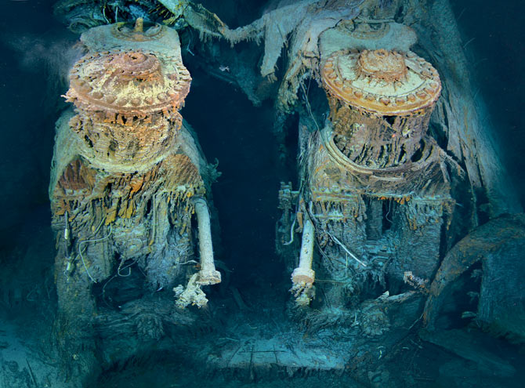
- 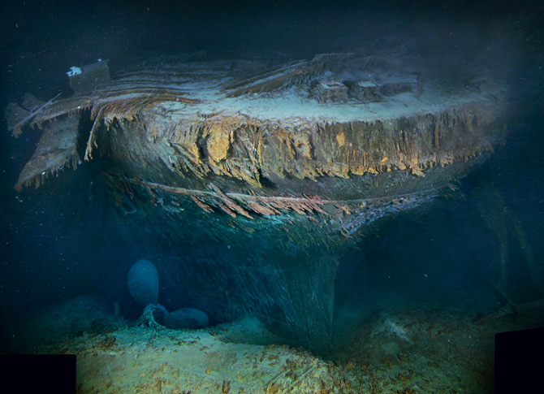
- 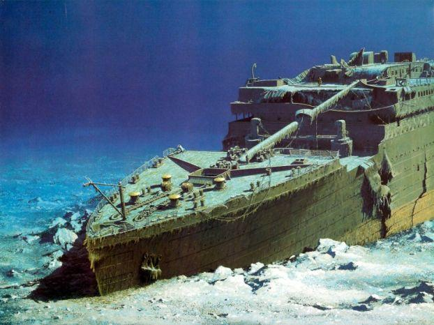

- 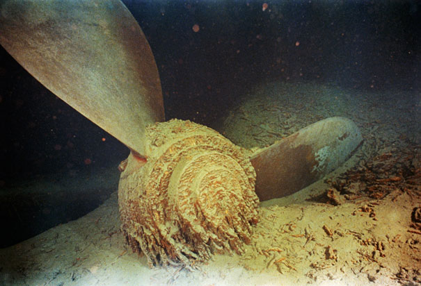
- 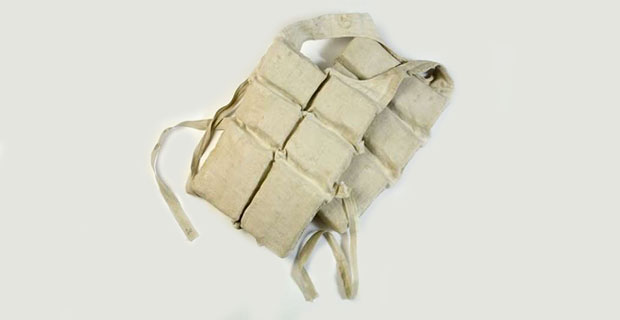
- 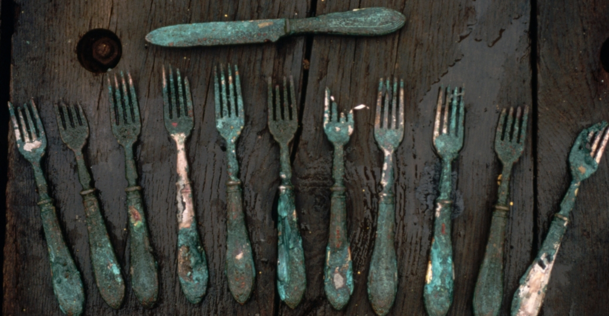
- 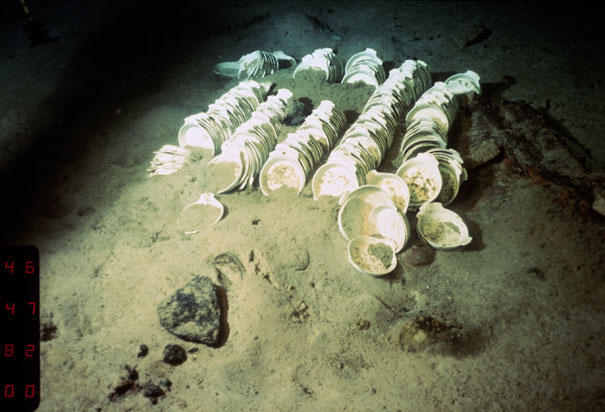
- 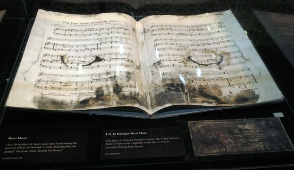
- 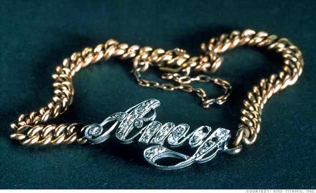
- 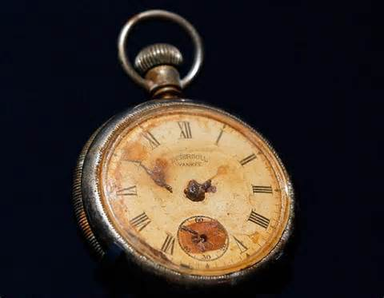
- 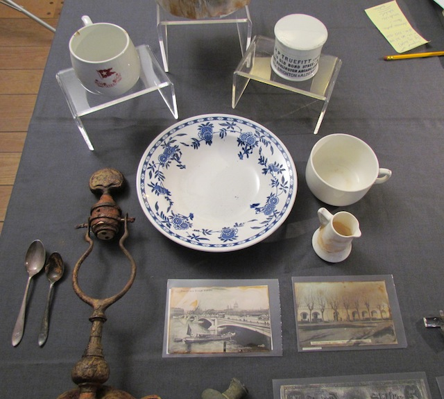
- 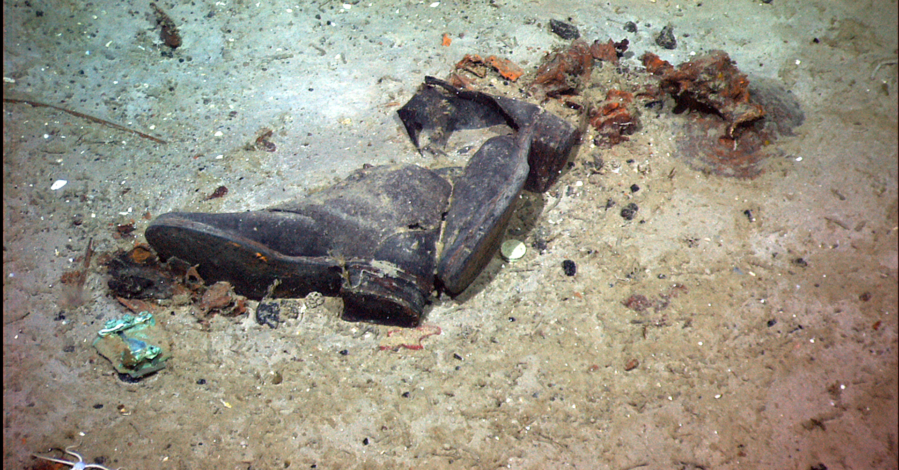